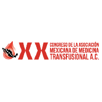
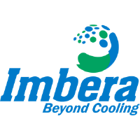
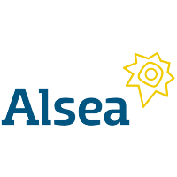
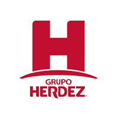

Organigrama & estructura RH
Explorar, gestionar y conectar la organización.
Transformo procesos complejos en productos digitales que funcionan. 8 años conectando código, diseño y visión de negocio.
La «i» es de Ivan. «Code» es lo que construyo. «Space» es todo lo que podemos imaginar. Cada tecnología abre una galaxia; cada línea de código es una estrella que conecta una idea con una solución real.




Interfaces, integraciones y flujos que convierten el trabajo diario en experiencias más claras.
Explorar, gestionar y conectar la organización.
Vacantes, candidatos, entrevistas y seguimiento.
Decisiones trazables y revisiones por documento.
Portafolios, sitios e invitaciones interactivas.
Las vistas son representaciones visuales de los proyectos; muestran información de ejemplo.
Elijo la tecnología por el problema que resuelve. Conecto experiencia de usuario, lógica de negocio e integración.
SAPUI5, SAP BTP, CAP con Node.js, OData V2/V4 y Cloud Foundry: del dato a la interfaz.
Soy Ivan Ruiz, desarrollador Full Stack con 8 años de experiencia. Hoy desarrollo soluciones de RH en Corporación Zapata con SAP BTP y SAPUI5, conectando pantallas, servicios y procesos de negocio.
Mi siguiente paso apunta al liderazgo técnico: definir soluciones, anticipar dependencias y acompañar el desarrollo de productos de principio a fin.
Organigrama, reclutamiento, vacantes internas, portal de candidatos, entrevistas y flujos de autorización.
Aplicaciones web, APIs, bases de datos e interfaces para proyectos corporativos y marcas de distintos sectores.
Visión integral de las soluciones, coordinación técnica y crecimiento hacia el liderazgo de proyectos.
Resumen del alcance. La vista del portafolio representa la interfaz con datos de ejemplo.